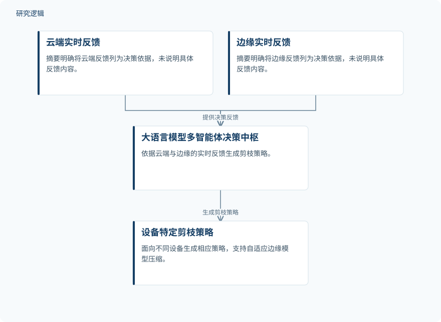

摘要解读
CE-MAC：面向自适应模型剪枝的云边多智能体协作
CE-MAC: Cloud–Edge Multiagent Collaboration for Adaptive Model Pruning
解读更新 2026-11-10 13:47 · 依据公开摘要整理，未核验全文细节
边缘设备资源有限，运行环境又不断变化，模型压缩如何不再依赖一套固定策略？CE-MAC尝试让大语言模型多智能体系统依据云端与边缘的实时反馈，生成面向不同设备的剪枝策略，为理解自适应边缘部署提供了一个切入点。
文章目录
边缘模型压缩面对的不只是资源限制
在工业应用中，将高精度模型部署到资源受限的边缘设备具有重要价值。摘要介绍的云边协作方式，是在云端训练高容量模型，再将压缩后的模型部署到边缘节点。但现实环境具有多样性与动态性，压缩策略需要面对的条件并非始终不变。
作者指出，传统流程通常假定部署设置固定，因此缺乏适应异构、持续变化环境的灵活性。本文关注的核心问题，是如何让压缩决策随设备与环境变化而调整，而不仅是完成一次模型压缩。
以多智能体决策连接实时反馈与设备剪枝
CE-MAC是一个基于大语言模型的云边协作多智能体系统，用于自适应边缘模型压缩。作者选择模型剪枝作为压缩手段，理由是剪枝支持可定制、渐进式的压缩，能够为动态边缘环境中的灵活调整提供基础。
其中，多智能体系统承担决策中枢的角色：接收来自云端与边缘的实时反馈，据此生成设备特定的剪枝策略，以促进云边协同演进。摘要并未展开智能体的角色划分、反馈内容或具体剪枝算法，因此不能据此补充更细的系统实现。
依据摘要整理的反馈驱动剪枝示意


仅概括云边反馈、多智能体决策与设备特定剪枝之间的关系，不表示论文原图或未报告的系统配置。
下载 SVG图示关系说明
实线表示相邻阶段的信息流，虚线表示跨阶段联系或反馈。
云端实时反馈 → 大语言模型多智能体决策中枢：提供决策反馈；边缘实时反馈 → 大语言模型多智能体决策中枢：提供决策反馈；大语言模型多智能体决策中枢 → 设备特定剪枝策略：生成剪枝策略
跨任务与压缩水平的表现：摘要报告了什么
作者在图像分类、关键词识别、轴承故障诊断和窃电检测任务上评估了CE-MAC。摘要报告，该方法在异构数据与不同压缩水平下取得了当前最先进的性能，评价范围并不限于单一任务。
这是一项摘要层面的总体结果陈述，而非可直接复核的量化比较。现有资料没有给出具体指标、提升幅度或各任务的分项结果，因此尚不能判断性能优势有多大，以及这种优势在不同任务间是否一致。
性能优势与动态适应能力仍需哪些证据
仅凭摘要，无法判断数据集规模、样本构成、训练与测试划分、比较方法及压缩水平的具体范围，也无法核对结果的不确定性。对于动态适应，还需进一步阅读环境变化如何设置、反馈如何触发决策，以及系统是否经过实际边缘设备验证。这些属于摘要未交代的信息，不代表论文没有开展相关工作。
阅读启发：关注剪枝策略如何随反馈改变
阅读启发：对智能运维读者，轴承故障诊断是本文值得继续关注的应用入口。后续阅读可重点追问：设备差异和实时反馈如何进入剪枝决策？大语言模型多智能体系统的贡献如何与剪枝方法本身区分？这些问题有助于理解自适应压缩的实际作用，但当前摘要不足以支持其已改善现场运维效果的判断。
以上为本站阅读启发与建议，不是论文已验证的结论。